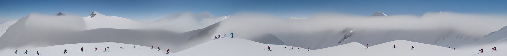
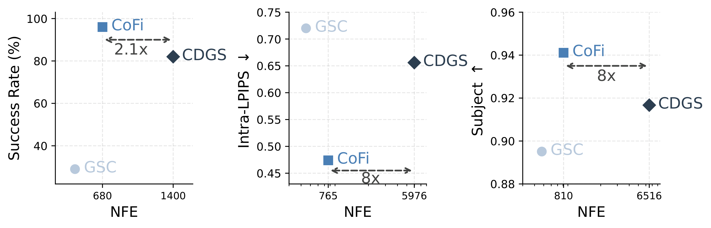

CogVideoX-2B natively generates 49-frame clips by default. CoFi composes 9 temporal chunks into a 273-frame 720p video, extending the temporal horizon by 5.6× without retraining the base model.
CoFi composes short local plans into long-horizon trajectories on OGBench. Each colored segment corresponds to one local plan, and the final trajectory is obtained by aligning and refining these segments into a coherent task-level global plan.
CoFi composes 9 overlapping 512×512 patches into a 512×4608 panorama while maintaining consistent style, texture, and layout.
CoFi separates long-horizon composition into global structure formation and local detail recovery.

Generated scaffold: globally coherent but locally blurred
CoFi denoises all local plans in parallel and pulls their clean estimates toward a shared scaffold. This stage resolves long-range structure first, producing a coarse but globally aligned plan.
Final output: globally coherent with fine local detail
CoFi re-noises the coarse scaffold to an intermediate timestep and denoises it again with the same pretrained local prior. This second pass restores local detail while keeping the global arrangement fixed.
We compare performance against the number of function evaluations (NFE) across the three domains. CoFi improves the main coherence metrics across domains while using 2–8× fewer NFE than CDGS, substantially reducing inference cost. The scaffold construction stage uses the same denoiser evaluations as GSC, and the refinement stage adds only t* extra steps, giving a total cost of T + t*.

Left: Robotic planning — CoFi achieves 96% success with 2.1× fewer NFE than CDGS. Center: Panoramic images — CoFi reduces Intra-LPIPS to 0.45 with 8× fewer NFE. Right: Long videos — CoFi reaches 94.1% subject consistency with 8× fewer NFE.
Side-by-side comparison of 273-frame long video generation. CoFi better preserves subject appearance and scene layout over long temporal horizons while using 8× fewer denoiser evaluations.
"A cute happy panda, dressed in a small red jacket and a tiny hat, sits on a wooden stool in a serene bamboo forest, strumming a miniature acoustic guitar..."